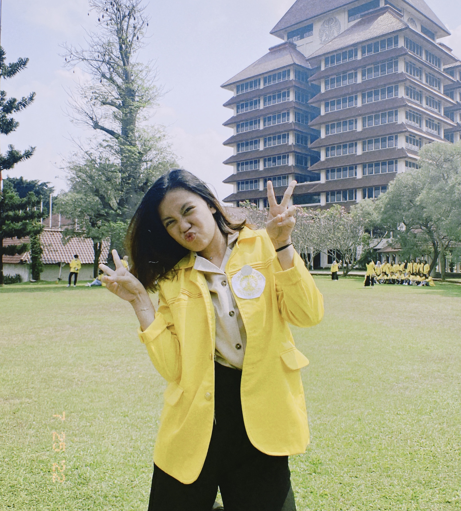

Get to Know My Future
Saniyah Salsabillah Wijaya
Student at University of Indonesia.
7 Tahun Lagi Mau jadi Apa?
7 tahun lagi kurang lebih umur saya sudah menginjak 25 tahun. Berbagai harapan muncul dan berharap semua akan terwujud secepat mungkin. Di umur 25 tahun, saya akan berhasil menyandang gelar S2 dengan jurusan yang terbaik guna menunjang karir dalam segi passion dan pendapatan. Selain itu, di 7 tahun ke depan, saya sudah menjadi penerus dari beberapa bisnis keluarga dan menjadi leader sekaligus manager yang baik dan berkompeten untuk menciptakan pencapaian yang paripurna di beberapa perusahaan dan bisnis saya.
Bagaimana Caranya?
Kenyataan memang tidak akan selalu semanis yang ada di mimpi. Terkadang realita juga jauh lebih menyakitkan dibanding ekspetasi Tetapi, kita harus selalu berusaha menjadi yang terbaik. Selain mengambil pendidikan di sebuah institusi pendidikan seperti S1 dan S2, banyak platform pendukung yang terbukau untuk berlatih dan meraih sertifikasi dan pelatihan. Selain itu, bersosialisasi juga sangat penting untuk mendapat relasi dan berbagai pengalaman. Konsultasi dan bertukar pikiran seperti brainstorming juga sangat membantu untuk mewujudkan berbagai hal.
Pencapaian Tiap Tahun!
Tahun Ke-1 dan 2
Membangun branding dengan mengikuti berbagai organisasi dan kepanitiaan yang dapat menunjang soft-skills dan hard-skills di intra kampus atau di luar kampus. Kegiatan ini bisa mendapatkan Appreciation Certificate untuk dikumpulkan. Selain itu bisa mengisi section Volunteer di Linkedin. Bisa juga mengikutin beberapa Bootcamp dan Workshop karir.
Tahun Ke-3 dan 4
Mengikuti berbagai organisasi dan kepanitiaan yang dapat menunjang soft-skills dan hard-skills di intra kampus atau di luar kampus. Kegiatan ini bisa mendapatkan Appreciation Certificates untuk dikumpulkan. Selain itu bisa mengisi section Volunteer di Linkedin. Bisa juga mengikutin beberapa Bootcamp dan Workshop karir. Saya juga berkesempatan untuk mengikuti program KEMENDIKBUD Kampus Merdeka seperti internship dengan konversi SKS kuliah dan lulus menjadi sarjana S1 dengan predikat CUMLAUDE.
Tahun Ke-5 dan 6
Setelah lulus S1 di dengan predikat CUMLAUDE. Saya lanjut dengan mengikuti S2 di kampus terbaik di jurusan yang saya mau. Kuliah 3x seminggu sembari bekerja di perusahaan terbaik dengan gaji 2 digit. Bertemu orang-orang berprestasi dan menginspirasi untuk menjalin kontrak kerjasama project.
Tahun Ke-7
Saya sudah lulus S2 dengan predikat CUMLAUDE. Saya juga dipromosikan di perusahaan saya untuk naik jabatan dengan gaji yang mengikuti job-desc saya di perusahaan ini. Selanjutnya saya juga sudah mencoba untuk membangun PT. atas nama saya dan melanjutkan bisnis keluarga. Selanjutnya saya sudah berencana akan menikah dan menjadi penerus perusahaan keluarga suami saya.